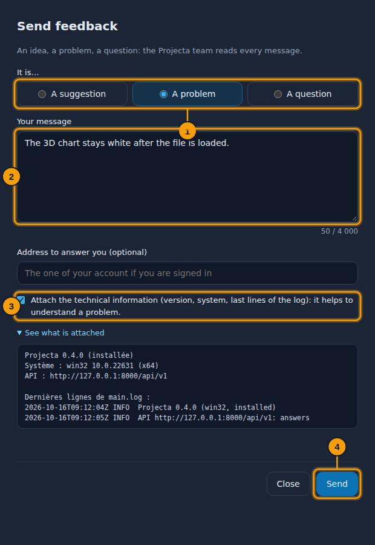
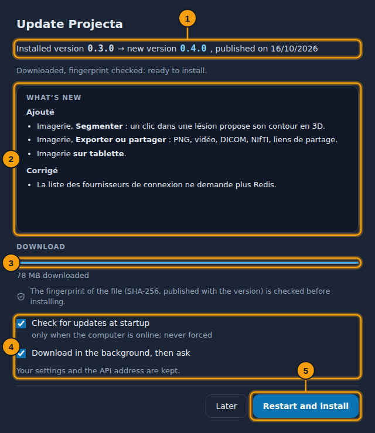

Desktop app¶
Projecta also comes as a Windows application, with the same dashboard.
Download¶
Download for Windows Portable version
Version 0.7.1, for Windows 10 and 11 (64-bit). Earlier versions and the
SHA-256 checksums (SHA256SUMS.txt) are on the
releases page. Once installed, the application updates itself
(Help › Check for updates…).
| File | Use |
|---|---|
Projecta-Setup-<version>.exe |
installs it, with shortcuts on the desktop and in the Start menu |
Projecta-<version>-portable.exe |
runs without installation (a USB key, a computer without administrator rights) |
“Windows protected your PC”
The application is not signed yet: on first launch, choose More info, then Run anyway.
This guide opens in the application with F1, in the language of the dashboard (Account › Language); the menus and windows of the application follow it too.
The server¶
The application reads your data on Projecta online: nothing else to install, create your account on first launch. At startup, a Connecting to Projecta bar moves on until the server answers (after a pause, it takes a few seconds to wake up; the application waits up to 30 s for it). If it does not answer (no Internet), the Connection to Projecta failed screen says so, and a new try comes by itself (after 15 s, then 30 s, then every minute): nothing to do, your data stay on the server. Another server, for example the one of your department, is chosen in File › API address….
Demonstration data only
Projecta online is a shared server: send it only demonstration or already anonymized data, never real patient data.
Work without a connection¶
When the connection to Projecta fails (no Internet, server stopped), the application goes on with what is on the computer:
- What you opened stays readable: your workspaces, the datasets and the pages read, the visualizations, the studies opened (anonymized). A banner and the Offline · n changes waiting pill say so.
- Your changes (the field or the columns of a workspace, the history, the measurements and the report of a study) wait for the reconnection; the pill opens their list, each can be cancelled.
- A new try comes by itself (15 s, 30 s, then every minute). At the reconnection, the changes leave in order; if the same item also changed online meanwhile, the application asks which one to keep (for the measurements: both, if you wish).
- Online only: loading a file, a database, the PACS, the assistant and new computations (visualizations, measurements of an ROI).
- At startup without a connection, Continue offline opens what is kept.
What is kept is encrypted for your Windows account and erased at sign-out; after 7 days without a connection, you sign in again. Account › Settings › Offline: switch it on or off, keep the studies, the space on the disk, erase it all.
Open a file with Projecta¶
Once installed, the application is added to the Open with menu of the
Windows Explorer (right click on a file) for CSV, TSV, Excel, Parquet,
JSON, YAML, DICOM (.dcm), NIfTI (.nii) files and the .zip files of
studies. Always use this app makes it the application of that type (a
double click is then enough).
- A dataset is imported, then opened in the overview.
- Medical images open Open medical images, the file already chosen: you decide on anonymization, then Open the exam.
If you are not signed in, the file waits for you to sign in. The portable version is not added to this menu (it installs nothing).
Send feedback¶
Help › Send feedback… opens a small window to write to the team: a suggestion, a problem or a question.

- The kind: suggestion, problem or question.
- Your message.
- Attach the technical information (or not).
-
Send.
-
Choose the kind, write the message (what you were doing, what happened, what you expected).
- An address to answer you, if you wish (otherwise, the one of your account when you are signed in).
- Attach the technical information (ticked) adds the version, the system and the last lines of the log; See what is attached shows them before sending. Never a password or any data.
- Send.
If the server does not answer, the message is kept in the logs folder
(avis-….txt): Open the folder to send it later.
Updates¶
At startup (if the computer is online), Projecta checks whether a new version exists; a notification offers it: Later, or See and update. Help › Check for updates… does the same on request.

- Your version and the new one.
- What’s new in it.
- The download; the fingerprint of the file is checked before installing (a changed file is never installed).
- The settings: check at startup, download in the background.
- Restart and install: Projecta closes, installs, then starts again.
Nothing is forced: Later keeps your version. Your settings and the API address are kept. With the portable version, the new file is downloaded, then shown in its folder: replace the old one with it.
What differs from the browser¶
- Exported files (charts, datasets, studies) are saved in
Downloads\Projecta, without a question; a message gives their full
path, with Open the folder. A name already taken gets a number:
…_2D (2).png. - Help › Logs folder opens the folder of the
main.logfile (%APPDATA%\Projecta\logson Windows): to attach to a request for help. - Account › What’s new says what changes from one version to the next.